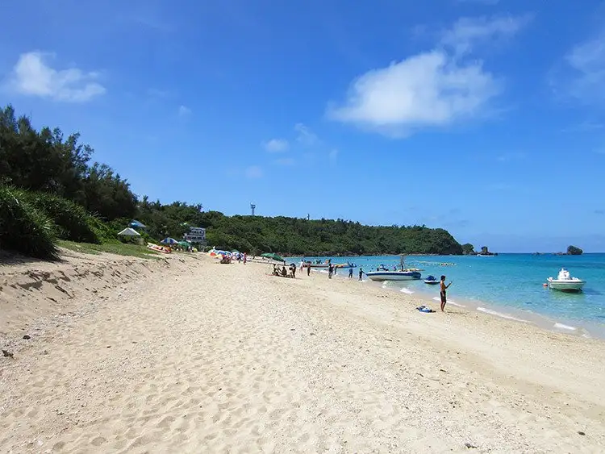

Japan / Okinawa / Uruma
Uruma · Okinawa
Uruma
Highlighted on the Okinawa map.

Uruma City Hall
Sights · Things to do · Places to eat · Places to stay · Day-to-day services
Nearby in Okinawa: ← Urasoe · Yaese →
Other towns: Aguni · Chatan · Ginowan · Ginoza · Haebaru · Higashi · Iejima · Iheya · Ishigaki · Itoman · Izena · Kadena · Kin · Kitadaito · Kitanakagusuku · Kumejima · Kunigami · Minamidaito · Miyakojima · Motobu · Nago · Naha · Nakagusuku · Nakijin · Nanjo · Nishiharacho · Ogimi · Okinawa · Onna · Taketomi · Tarama · Tokashiki · Tomigusuku · Tonaki · Urasoe · Yaese · Yomitan · Yonabaru · Yonaguni · Zamami
All towns in Okinawa · Back to all prefectures